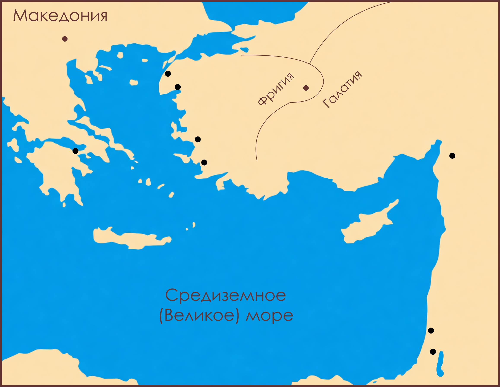

Деяния 18:23 – 21:17

Третье путешествие стало самым плодотворным: три года в Ефесе, укрепление церквей в Македонии и Греции, и путь в Иерусалим.
Главный урок: Бог призывает нас не только начинать, но и укреплять, наставлять и завершать путь с верой.